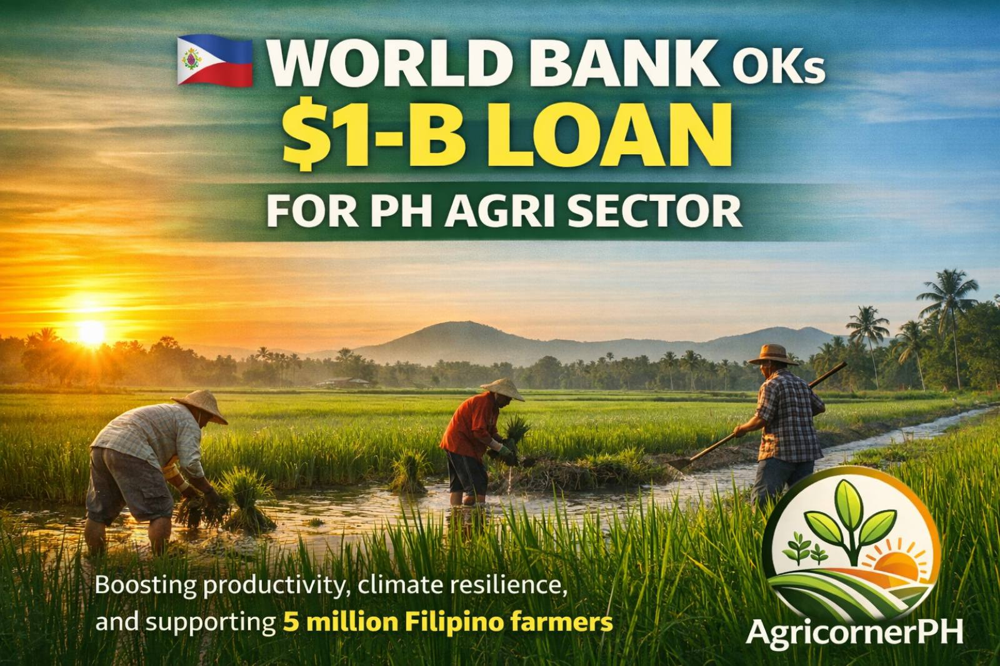

The World Bank has approved a $1 billion loan to support agricultural transformation in the Philippines. The project aims to boost productivity, improve climate resilience, and benefit around 5 million Filipino farmers nationwide.
Read full story →Mindanao is home to rich biodiversity of indigenous ferns. Researchers from Central Mindanao University are working to conserve these endemic and economically important species.
Read full story →